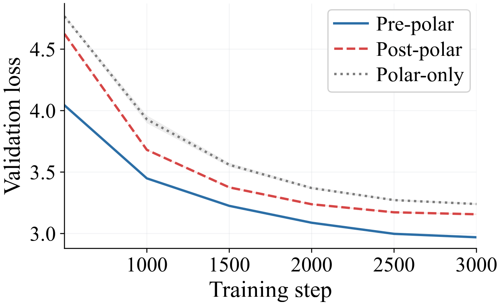
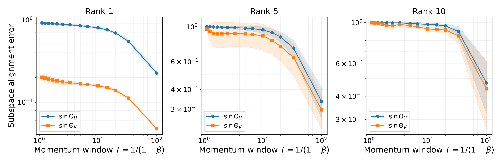
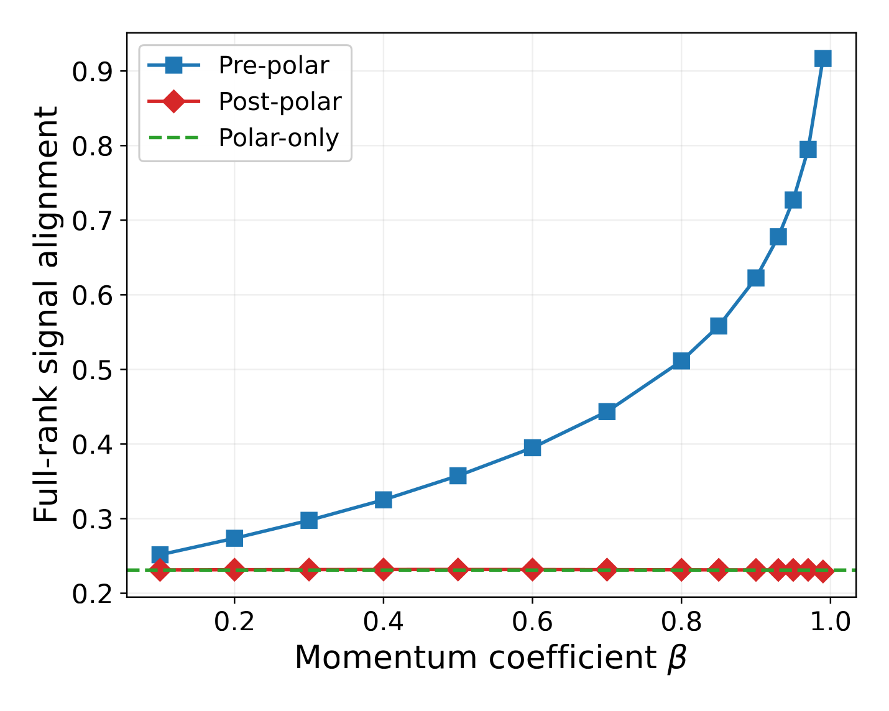
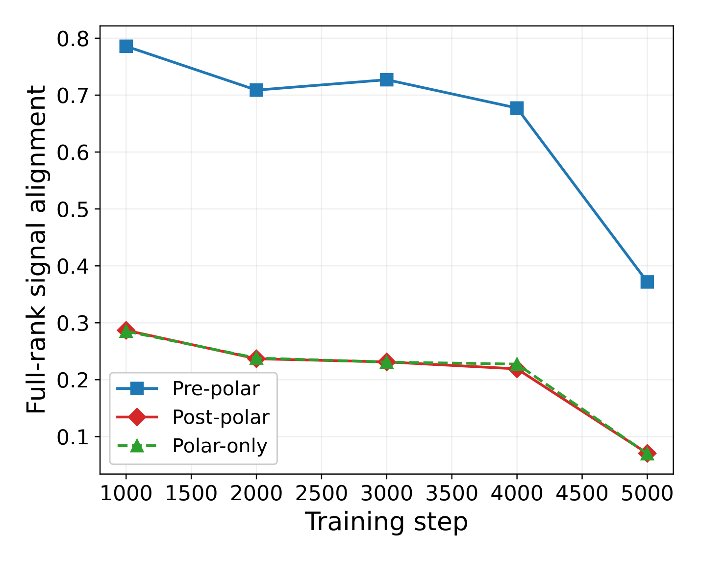
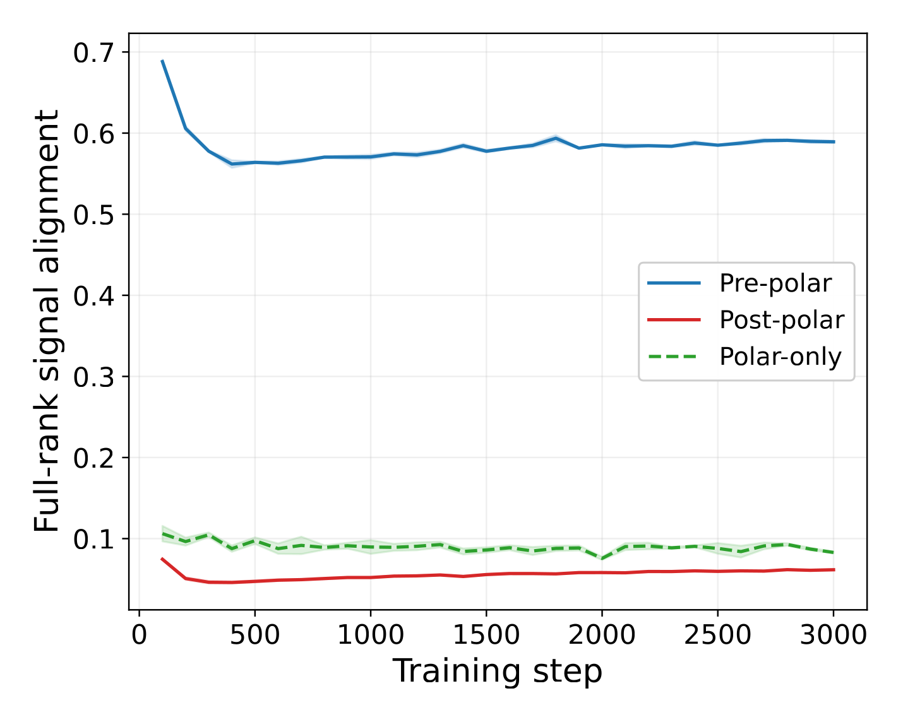

Denoise First, Orthogonalize Later
Understanding Momentum in Muon via Spectral Filtering
- 1The Institute of Statistical Mathematics
- 2The Graduate Institute for Advanced Studies, SOKENDAI
- 3National Institute of Informatics
- 4The Chinese University of Hong Kong
- 5Tohoku University
- 6RIKEN AIP
The question Muon raises
Muon[1] orthogonalizes a momentum buffer, while Orthogonal-SGDM[2] orthogonalizes each per-step gradient and then averages by momentum. Empirically, Muon wins on LLM pretraining. Yet prior Muon analyses predict heavier momentum offers no convergence benefit and may even degrade it, and they say nothing about why one specific ordering of momentum and orthogonalization should matter.
Two questions follow: (i) does momentum smoothing matter at all inside Muon, and (ii) if so, why should the polar factor be applied after momentum smoothing rather than before?
Let $G_t \in \mathbb{R}^{m\times n}$ be the gradient, $M_t = \beta M_{t-1} + (1-\beta)G_t$ the momentum buffer, and $\mathcal{O}(X) = UV^\top$ the polar factor of the SVD $X = U\Sigma V^\top$. Three pipelines combine the same two operations differently:
The end-to-end loss curves on NanoGPT and LLaMA 350M show a clean separation that persists for the entire training run.


Two conclusions follow. First, the Pre-polar and Post-polar pipelines use the same two operations in opposite orders, so any gap between them must come from the ordering itself — momentum and orthogonalization do not commute as numerical operations. Second, the gap from Pre-polar to Polar-only shows that momentum supplies value the polar factor alone cannot recover: it is an essential component of Muon, not a cosmetic acceleration trick. This raises the central question of our interest:
What role does momentum play on the gradient stream, and why does placing it before orthogonalization matter inside Muon?
We answer it in two stages. Momentum opens a spectral gap on the gradient stream and produces a more reliable momentum matrix for orthogonalization (Result 1, Theorem 1 and Corollary 1), and Pre-polar achieves provably stronger signal alignment than Post-polar or Polar-only (Result 2, Theorem 2).
Result 1 · Momentum opens a spectral gap
Decompose the gradient as a coherent rank-$r$ signal plus a martingale-difference perturbation, $G_t = G_t^{\text{sig}} + \Xi_t$, with bounded variance $\mathbb{E}\|\Xi_t\|_F^2 \le \eta$. Let $T = 1/(1-\beta)$ be the effective momentum window size. Then the momentum buffer $M_t$ both preserves the coherent signal singular values and attenuates the perturbation tail.
Spectral gap of the momentum buffer.
Under Assumptions 1 and 2, with probability at least $1 - (2T-1)^{-1/2}$, $$ \begin{aligned} \sigma_k(M_t) &\;\ge\; c_{\text{sig}}\lambda_k \;-\; \frac{\sqrt{\eta}}{(2T-1)^{1/4}}, \quad k = 1,\ldots,r, \\[2pt] \sigma_{r+1}(M_t) &\;\le\; \frac{\sqrt{\eta}}{(2T-1)^{1/4}}. \end{aligned} $$
The spectral gap of Theorem 1 on a synthetic rank-$r$ spiked-MDS gradient stream (paper Figure 7). As $\beta$ rises, the momentum spectrum (blue) converges to the signal $G^{\text{sig}}$ (amber diamonds) at the head, while the noise tail is attenuated.
Synthetic generator: rank-$r$ true gradient $G^{\text{sig}} \in \mathbb{R}^{100\times 100}$ plus an ARCH(1)-style martingale-difference perturbation $\Xi_t$ at scale $\sigma$, gradient buffer $K = 1000$, both panels averaged over 10 trials. β is capped at $0.995$ so the buffer is in its post-transient regime (Assumption 2). At the $(r{=}3,\,\sigma{=}1,\,\beta{\le}0.99)$ reference grid, numerics match the paper's Figure 7 to within trial variance.
This is the opposite of the convergence-rate story in prior Muon analyses, which deteriorate with heavy momentum. The next figures show the same effect on real NanoGPT gradients.

h.0.attn.c_proj, step 3000. As β rises, the momentum spectrum (blue) descends toward the mean-gradient spectrum (orange dashed) — head first, tail later.
Theoretically, the gap $\sigma_r(M_t) - \sigma_{r+1}(M_t)$ scales as $\Theta(1) - O(T^{-1/4})$ — it widens as momentum strengthens.
Theorem 1 controls singular values. The same mechanism extends to singular subspaces: via Wedin's perturbation inequality, the top-$r$ subspaces of $M_t$ approach those of the signal $G_t^{\text{sig}}$ as the effective window size $T$ grows.
Singular-subspace reliability.
Under the same conditions as Theorem 1, with probability at least $1 - (2T-1)^{-1/2}$, $$ \begin{aligned} \|\sin\Theta(\hat U_t, U)\|_2 &\;\le\; \frac{\sqrt{\eta}/(2T-1)^{1/4}}{c_{\text{sig}}\lambda_k - \sqrt{\eta}/(2T-1)^{1/4}} \;=\; O(T^{-1/4}), \\[2pt] \|\sin\Theta(\hat V_t, V)\|_2 &\;\le\; \frac{\sqrt{\eta}/(2T-1)^{1/4}}{c_{\text{sig}}\lambda_k - \sqrt{\eta}/(2T-1)^{1/4}} \;=\; O(T^{-1/4}), \end{aligned} $$ where $\hat U_t$, $\hat V_t$ are the top-$r$ left and right singular subspaces of $M_t$, and $U = [u_1, \ldots, u_r]$, $V = [v_1, \ldots, v_r]$ those of the signal $G_t^{\text{sig}}$.
Taken together, Theorem 1 and Corollary 1 say that the polar factor, applied to $M_t$, operates on a matrix whose singular directions are already clean and whose singular values are nearly those of $G^{\text{sig}}$ — exactly what the orthogonalization step needs to be reliable.

Live training: subspace alignment under non-stationarity
The stationary probe holds the model weights fixed. To check the live training case, we maintain a sliding $K$-step gradient buffer alongside the optimizer during live NanoGPT training and rerun the analysis on the buffer. The signal subspace now drifts step-by-step.

Result 2 · Pre-polar dominates Post-polar and Polar-only
Theorem 1 explains why momentum helps. It does not yet explain why putting momentum before orthogonalization wins over the reverse. The polar factor preserves singular directions but replaces all singular values with ones, so when it acts directly on a noisy gradient, it erases the amplitude gap between signal and noise directions. Subsequent averaging cannot recover what was already destroyed.
Each pipeline produces an output matrix: $\mathcal{O}(M_t)$ for Pre-polar, $\mathcal{O}(G_t)$ for Polar-only, and $\widetilde{M}_t$ for Post-polar. Measure its signal alignment as the Frobenius inner product with the true signal, $\langle \cdot,\, G^{\text{sig}}\rangle_F$. Theorem 2 below shows that Pre-polar's expected signal alignment exceeds both alternatives by a positive constant gap, once the momentum window size $T$ is large enough.
Pre-polar dominates Post-polar and Polar-only.
For any fixed signal $G^{\text{sig}}$ and any absolutely continuous perturbation, there exists $C > 0$ such that for sufficiently large window size $T = 1/(1-\beta)$, $$\mathbb{E}\!\left[\frac{\langle \mathcal{O}(M_t),\, G^{\text{sig}}\rangle_F}{\langle \mathcal{O}(G^{\text{sig}}),\, G^{\text{sig}}\rangle_F}\right] \;\ge\; \max\!\left\{ \mathbb{E}\!\left[\frac{\langle\mathcal{O}(G_t),\, G^{\text{sig}}\rangle_F}{\langle \mathcal{O}(G^{\text{sig}}),\, G^{\text{sig}}\rangle_F}\right],\;\; \mathbb{E}\!\left[\frac{\langle \widetilde{M}_t,\, G^{\text{sig}}\rangle_F}{\langle \mathcal{O}(G^{\text{sig}}),\, G^{\text{sig}}\rangle_F}\right] \right\} + \tfrac{C}{2}.$$
Pre-polar signal alignment, visualized as arrows in a 2-D plane. The $m\!\times\!n$ matrices $G_K$, $G^{\text{sig}}$, $M_K$ are projected onto a fixed 2-D plane and drawn as arrows from the origin. As $\sigma$ rises, $G_K$ swings away from $G^{\text{sig}}$ in both direction and length; as $\beta$ rises, $M_K$ rotates back onto $G^{\text{sig}}$ and contracts to its length. At $\beta = 0$, $M_K = G_K$; at $\beta \to 1$, $M_K \to G^{\text{sig}}$.
Synthetic generator: rank-$r$ true gradient $G^{\text{sig}} \in \mathbb{R}^{100\times 100}$ plus an ARCH(1)-style martingale-difference perturbation $\Xi_t$ at scale $\sigma$, gradient buffer $K = 1000$, single-trial trajectory, β capped at $0.995$. The three $m\!\times\!n$ matrices are projected onto a fixed 2-D plane (top-2 signal SVD directions for $r \ge 2$; signal direction plus an orthogonal companion for $r = 1$) and rotated $30°$ for display. The cosine and length-ratio readouts are computed in this plane.
The empirical comparison closely tracks the theory: Pre-polar's signal alignment grows with $\beta$ and dominates both other pipelines, while Polar-only is by construction $\beta$-independent. The next figures show the same effect on real NanoGPT gradients.


Live training: pipeline ordering survives non-stationarity
Same trajectory probe as in Result 1: a $K$-step sliding gradient buffer alongside live NanoGPT training. The model weights — and the signal subspace — drift step-by-step.


Quantitative refinement under low SNR
Theorem 2 is qualitative — Pre-polar dominates by some positive constant gap. The next result makes the separation concrete in the rank-1 spiked Gaussian setting.
Quantitative separation under the rank-1 spiked Gaussian model.
In the low-SNR regime $\lambda < 0.25\sigma_\Xi(\sqrt{m}-\sqrt{n})$, the Polar-only signal alignment becomes marginal as the matrix size grows relative to $\lambda$ — Polar-only loses the signal entirely. Pre-polar, in contrast, continues to recover the signal as long as the momentum window $T$ is large.
Ablations across additional NanoGPT attention/MLP projection layers and training checkpoints, CIFAR-10 stationary and trajectory probes, and synthetic ARCH-MDS perturbation variants reproduce the same head-versus-tail spectral gap and Pre-polar's dominance over both other pipelines. See the appendix of the paper for the full grid and per-cell variance.
Takeaways
- Momentum is a spectral filter on the gradient stream. It preserves the coherent signal while attenuating the perturbation, opening the spectral gap of Theorem 1.
- Denoise first, then orthogonalize. Pre-polar's dominance over Post-polar and Polar-only is one consequence of this perspective: the polar factor benefits from operating on a buffer whose spectrum has already been denoised.
- The mechanism extends beyond Muon. Spectral filtering is a property of momentum acting on any noisy matrix gradient stream — the same perspective applies to any matrix-based optimizer. This view suggests both new analyses of momentum schedules[3] and new optimizer designs.
References
- Jordan, K., Jin, Y., Boza, V., You, J., Cesista, F., Newhouse, L., Bernstein, J. Muon: An optimizer for hidden layers in neural networks. blog post, 2024.
- Tuddenham, M., Prügel-Bennett, A., Hare, J. Orthogonalising gradients to speed up neural network optimisation. arXiv:2202.07052, 2022.
- Li, X., Luo, J., Zheng, Z., Wang, H., Luo, L., Wen, L., Wu, L., Xu, S. On the Performance Analysis of Momentum Method: A Frequency Domain Perspective. ICLR 2025.
A full bibliography is given in the paper.